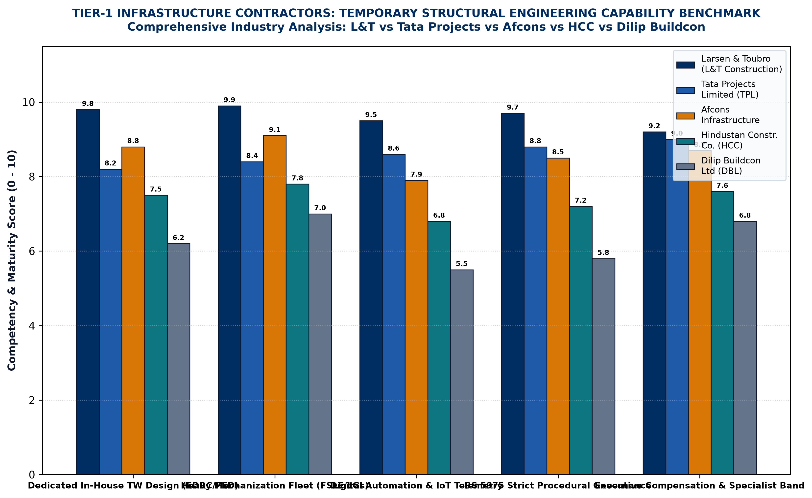
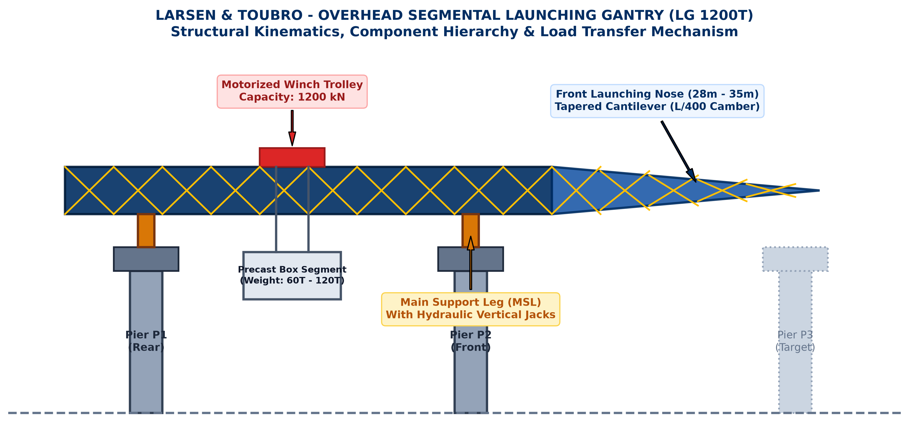
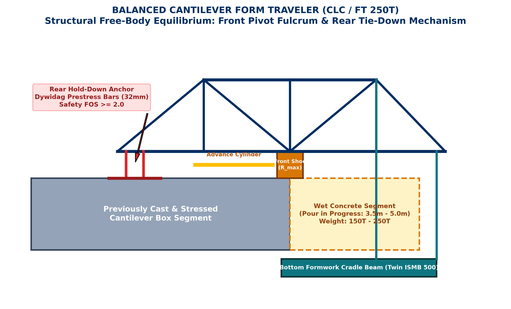
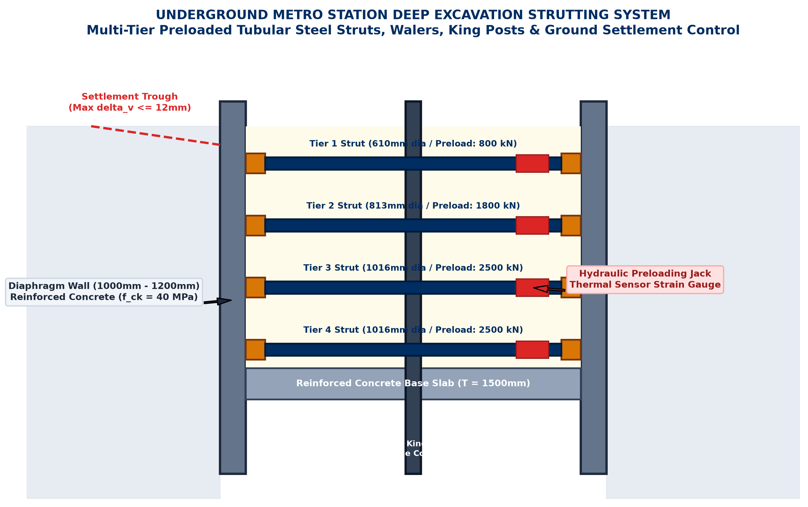
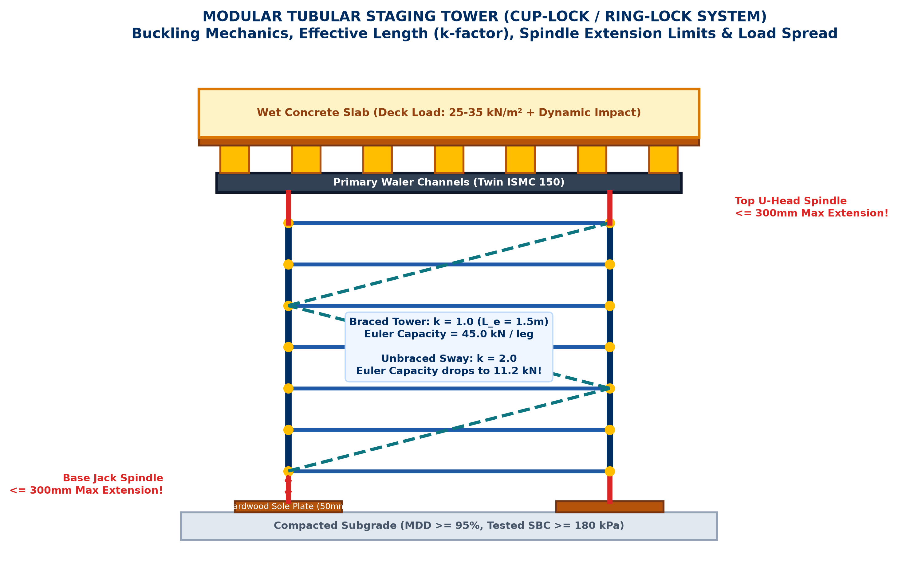
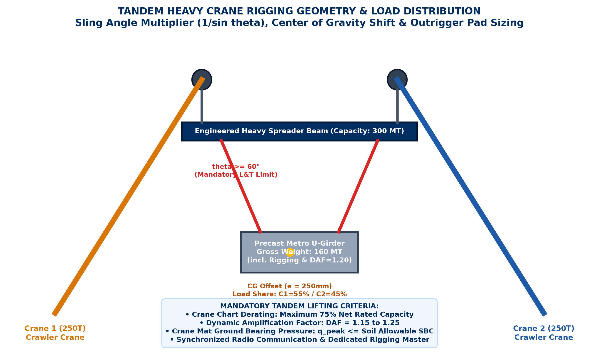
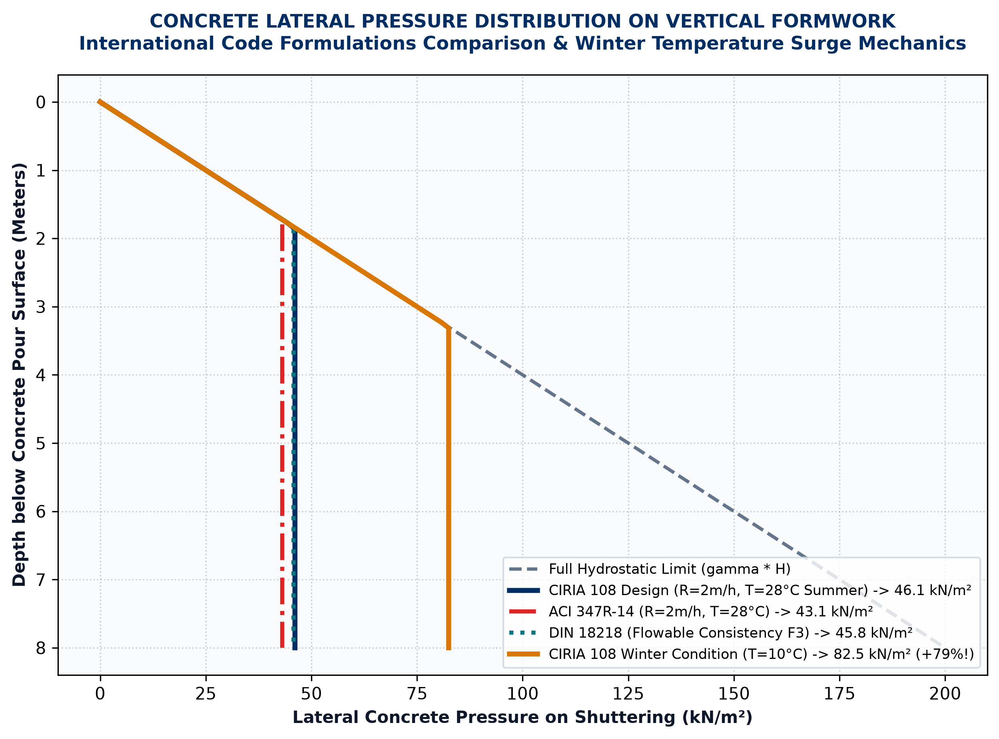
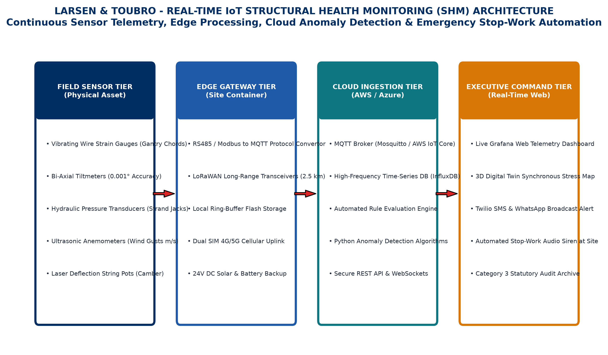
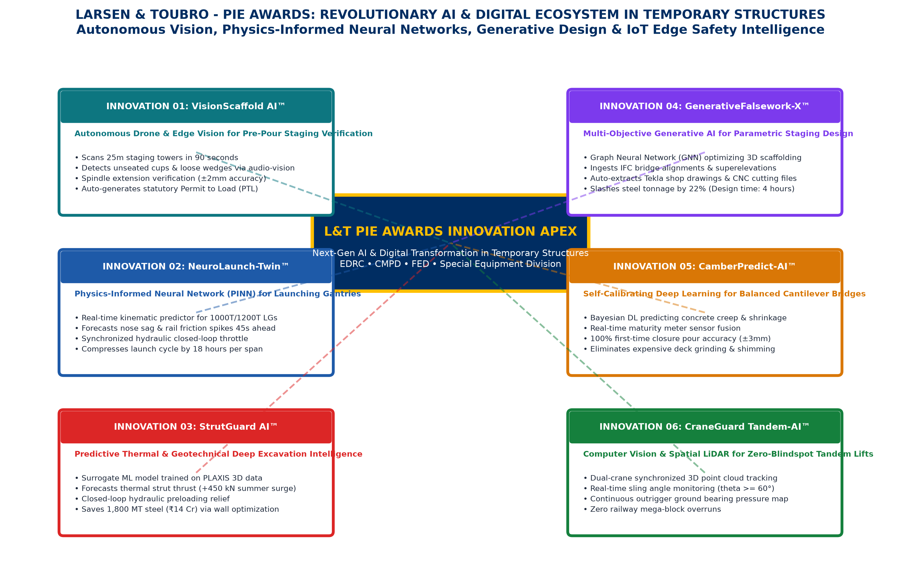

All 10 Engineering Pillars (500 Roles)
Showing 500 of 500 roles
0 / 500 Understood
EDRC • CMPD • FED • SE&HLD | Roles, Competitor Intelligence, Visual Atlas & PIE Awards AI Showcase
Showing 500 of 500 roles
Real operational intelligence across India's largest infrastructure conglomerates: Larsen & Toubro vs Tata Projects vs Afcons vs HCC vs Dilip Buildcon.

| Evaluation Parameter | Larsen & Toubro (L&T) | Tata Projects Limited (TPL) | Afcons Infrastructure | Dilip Buildcon (DBL) |
|---|---|---|---|---|
| In-House Design Strength | EDRC/FED/CMPD: 250+ dedicated structural temporary works engineers. Completely self-reliant. | E&T Division + TCE: Strong in-house team with significant reliance on Tata Consulting Engineers. | Specialized Marine/Bridge Cell: Highly skilled site-driven design specialists. | Lean Highway Team: Focuses on repetitive standardization of flyover falsework. |
| Equipment Fleet & Mechanization | Unrivaled Ownership: 1000T FSLE, 40+ Launching Gantries, hundreds of strand jacks, vast modular staging. | Hybrid Model: Heavy partnerships with Doka, PERI, and Sarens for turnkey systems. | Marine Superiority: India's largest fleet of jack-up barges, spud barges, and floating cranes. | Road Plant Dominance: Massive captive earthmoving and road machinery fleet. |
| Approval & Quality Rigor | BS 5975 & PTL Mandate: Zero tolerance for site deviation. Category 3 proof checks strictly enforced. | Tata Safety (TSMS): High corporate audit standards and digital gatekeeper control. | Severe Environment Rigor: Heavy marine and seismic risk governance. | Speed-Driven: Fast-track verification aimed at bonus milestones. |
| 12-Year Specialist Salary (CTC) | ₹38L – ₹55L CTC + Senior Leadership incentives & Executive medical. | ₹36L – ₹52L CTC + Performance bonuses. | ₹34L – ₹48L CTC + Special project allowances. | ₹32L – ₹50L CTC + Early completion cash bonuses. |
High-resolution, engineering-grade illustrations of the core temporary structural systems governed by Senior Engineering Managers.







L&T designed the 1000-Ton Full Span Launching Equipment (FSLE) suite: 1000T Straddle Carrier, Transporter, and Launcher achieving span erection in 24 hours.
Engineered over 5.5 km of heavy steel piling access jetties carrying 100T crawler cranes and transit mixers in severe 6-meter tides.
Engineered custom cable crane systems spanning 915 meters with 20-ton payload capacity, synchronizing dual cableways to erect steel arch segments in mid-air.
6 High-Impact AI Engineering Inventions Engineered to Win Chairman's & PIE Awards

Autonomous Drone & Edge Vision for Pre-Pour Staging Audits: Scans 25m staging towers in 90 seconds using YOLOv10 and stereo depth. Measures spindle extensions to ±2mm, detects unseated cup wedges, and verifies acoustic hammer-strike frequency (>2.8 kHz = locked).
Physics-Informed Neural Network (PINN) for Launching Gantries: Embeds Timoshenko beam mechanics and P-Delta equations into deep learning. Predicts cantilever nose sag and support leg anomalies 45s ahead, auto-throttling hydraulic advance to prevent derailment.
Predictive Deep Excavation Thermal-Soil Intelligence: Surrogate model trained on 10,000 PLAXIS 3D runs. Predicts summer thermal thrust surges (+450 kN), modulating hydraulic pressure relief jacks. Saves 1,800 MT steel by optimizing strut wall thickness.
Multi-Objective Generative AI for Parametric Falsework: Graph Neural Networks ingest 3D IFC bridge geometry, synthesizing thousands of valid staging grids. Simultaneously minimizes steel tonnage (22% reduction) and auto-generates Tekla CNC cutting plans in 4 hours.
Bayesian Deep Learning for Balanced Cantilever Bridges: Fuses IRC:112 creep models with wireless concrete maturity meters and robotic total stations, self-calibrating camber profiles after every pour. Achieves ±3mm closure accuracy, zero grinding.
Spatial 3D LiDAR & Vision for Zero-Blindspot Tandem Lifts: Fuses dual-crane point clouds, tracking CG eccentricity and sling angles (theta >= 60°). Provides in-cabin Augmented Reality HUD, preventing boom collapse during tight railway mega-blocks.